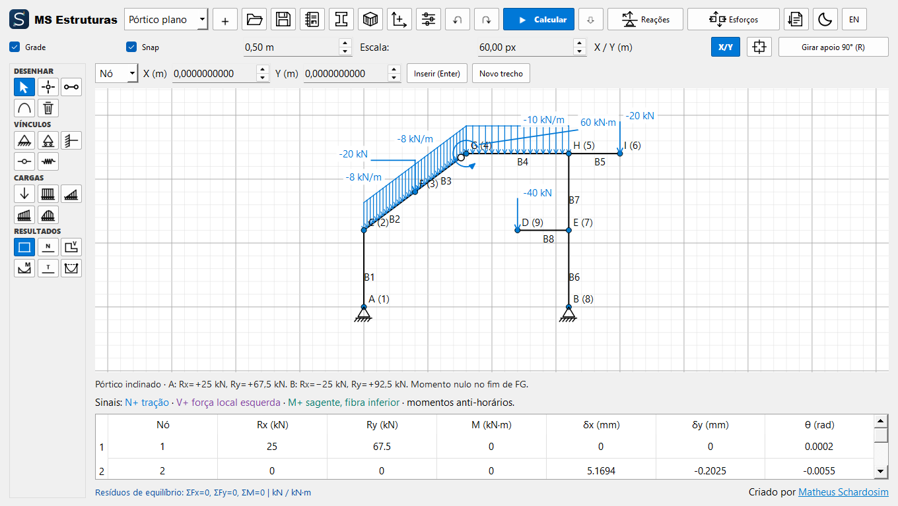
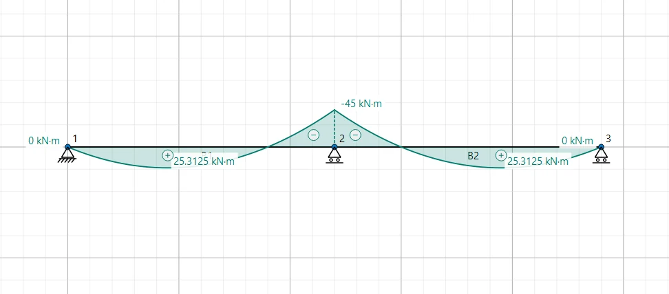
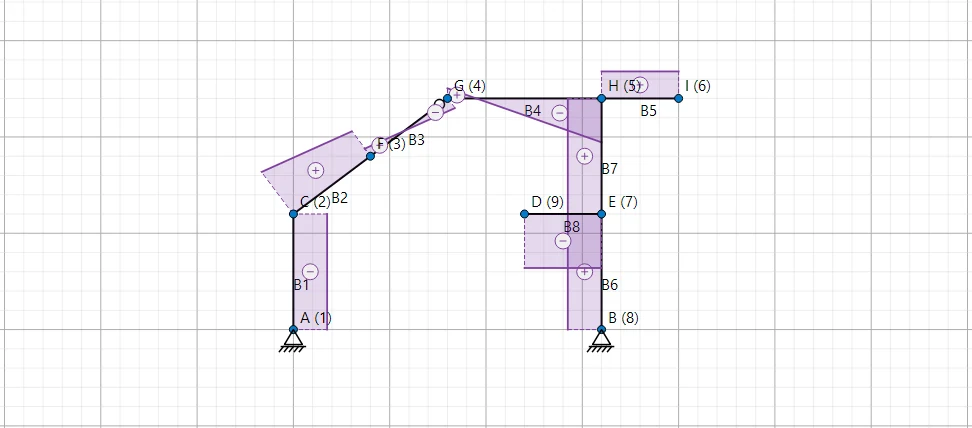
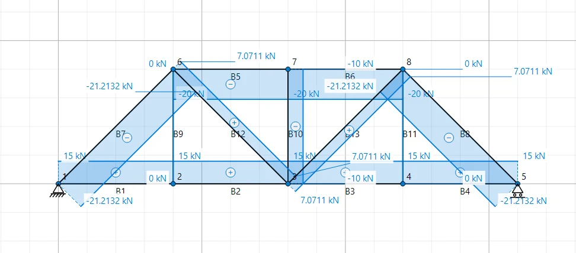
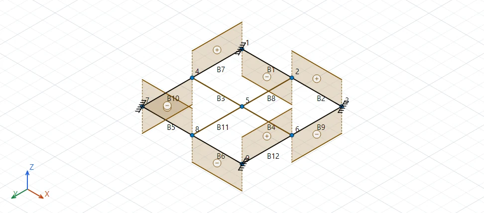
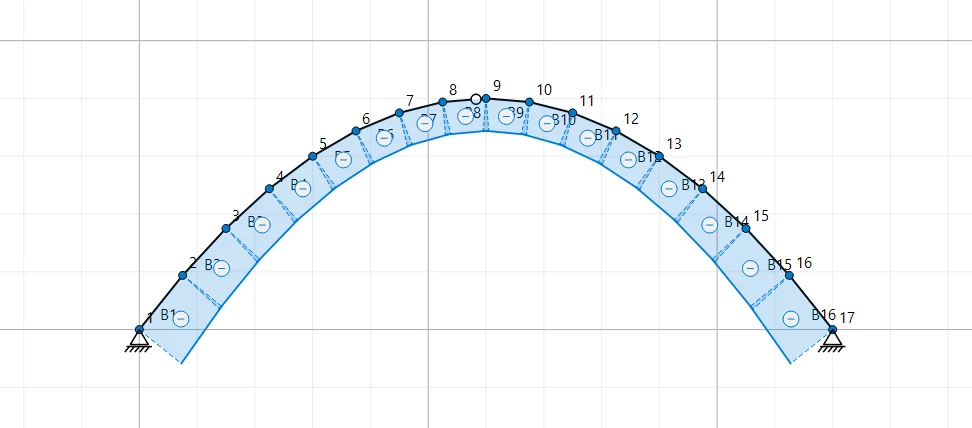

MS Estruturas
Aplicativo para modelar e analisar vigas, pórticos, treliças, grelhas e arcos. Defina a geometria, os vínculos e as cargas, calcule a estrutura e acompanhe os resultados nos diagramas.

Da modelagem aos resultados
- Materiais e seções
- Materiais predefinidos ou personalizados. Seções maciças, tubulares e perfis I, U, T e L.
- Apoios e cargas
- Apoios fixos, móveis e engastes, além de molas e rótulas. Forças, momentos e cargas distribuídas, inclusive por função personalizada.
- Resultados
- Reações, força normal, cortante, momento fletor, torção em grelhas e deformada. Exportação em PDF, PNG ou CSV.
Veja o programa em ação
Acompanhe um pórtico inclinado da geometria aos diagramas de esforços e veja os modelos de viga, treliça, grelha e arco.
47 segundos · Texto em português na tela
Cinco estruturas, cinco diagramas
Os modelos já vêm no aplicativo. Selecione um diagrama para ampliar.
-

Viga contínua de dois vãos
Momento fletor (M)Sob carga uniforme nos dois vãos, o diagrama mostra a mudança de sinal do momento junto ao apoio central.
-

Pórtico inclinado
Esforço cortante (V)Barras inclinadas, balanços e uma rótula no mesmo modelo, com cargas nodais e distribuídas.
-

Treliça Howe
Força normal (N)O diagrama axial indica quais barras trabalham à tração e quais trabalham à compressão sob as cargas nos nós.
-

Grelha Malha 2×2
Momento torçor (T)Quatro células com cargas verticais. A vista isométrica mostra os esforços ao longo das barras da malha.
-

Arco parabólico triarticulado
Força normal (N)A força normal acompanha os segmentos do arco, com compressão sob o carregamento do exemplo.


Guias em PDF
Veja como montar os modelos e interpretar os diagramas de cada estrutura.
Projeto concebido e desenvolvido por Matheus Schardosim. Análise estrutural elástica linear de primeira ordem.